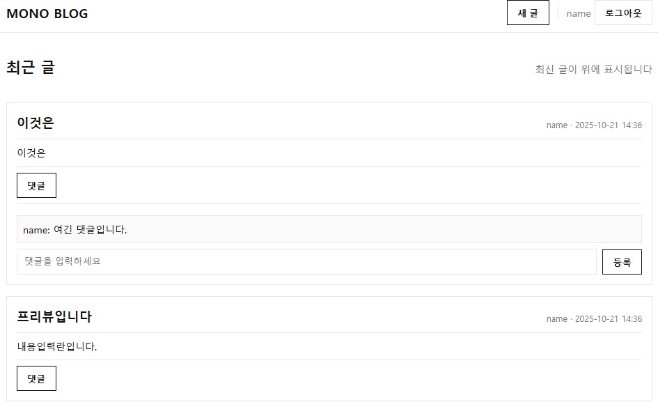
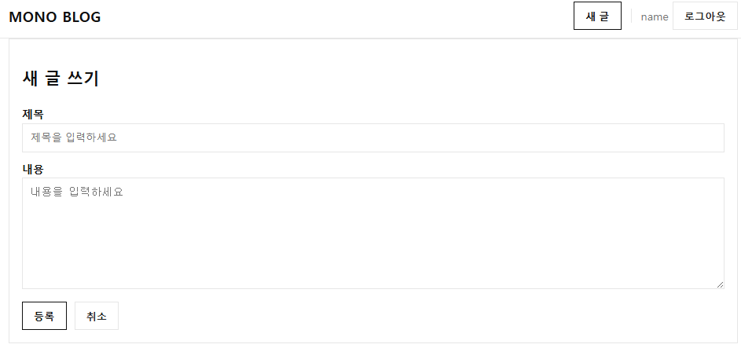

간단한 코드로 만드는 블로그 사이트 — 빠른 시작 가이드
버전 v1.0 · 2025-10-22 · 학습용 템플릿(HTML 단독 실행)
1. 1분 요약(Quick Start)
- /free/login.html 열기 → 닉네임 입력 → 시작
- /free/index.html에서 새 글 작성 → 제목/내용 입력 → 등록
- 글 카드의 댓글 버튼 → 댓글 입력 → 등록
✅ 데이터는 브라우저 localStorage에 저장됩니다. 같은 브라우저/기기에서만 유지됩니다.
2. 폴더 구조
/free
├─ login.html # 닉네임 로그인
├─ index.html # 블로그 홈(목록/작성/댓글)
├─ style.css # 무채색·각진 스타일
├─ app.js # 저장/렌더/이벤트 제어
└─ assets/
├─ preview-01.png # 목록·댓글 화면
└─ preview-02.png # 글쓰기 화면
3. 동작 원리(한 줄 설명)
- 로그인: 닉네임을
localStorage에 저장 (mono_user)
- 글/댓글:
mono_posts 키에 배열 형태로 저장
- 새로고침해도 남음(같은 브라우저 한정), 다른 브라우저/기기로는 공유되지 않음
4. 사용 방법(상세)
- 로그인 —
login.html에서 닉네임 입력 → 시작
- 글 작성 —
index.html > “새 글” 버튼 → 제목/내용 입력 → 등록
- 댓글 — 글 카드 > “댓글” → 댓글 입력 → 등록
- 로그아웃 — 상단 “로그아웃” → 다시
login.html로 이동

그림 1. 목록/댓글 화면

그림 2. 글쓰기 화면
5. 주의 & 제한(학습용)
- 보안/백업 없음 — 운영 서비스로 사용하지 마세요.
- 데이터 공유 안 됨 — 기기/브라우저가 바뀌면 데이터가 보이지 않습니다.
- 시크릿 모드에서는 저장되지 않을 수 있습니다.
6. 문제 해결(FAQ)
| 증상 | 원인/해결 |
|---|
| “데이터가 사라졌어요” | 다른 브라우저/시크릿 모드 사용 여부 확인. 같은 브라우저에서 테스트하세요. |
| 버튼이 동작하지 않아요 | 개발자도구(F12) → Console 오류 확인, app.js 경로/파일명 점검 |
| 한글 깨짐 | 파일 UTF-8 저장/브라우저 최신버전 사용 |
7. 다음 단계(Pro 예정)
- 태그/검색, JSON 내보내기
- 디자인 프리셋 3종
- 정적 배포(10분) 가이드